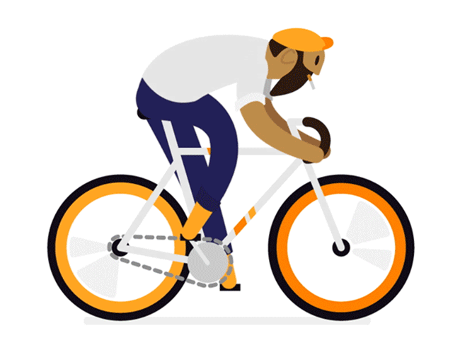
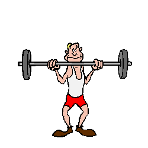
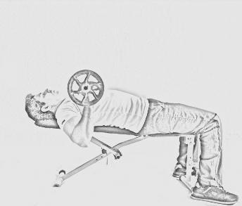
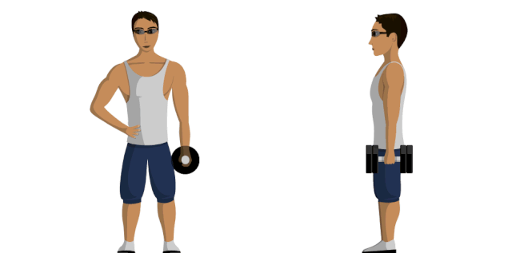

Recuerda que el cuerpo ectomorfo es naturalmente delgado, tiene las caderas y hombros estrechos, poca grasa corporal y brazos y piernas muy delgados

CARDIO
1 Muy poco cardio,salidas en bici de intensidad moderada a baja y paseos rápidos (cardio con actividades relajadas para reducir el estrés)

FUERZA
1 Entrena con pesas pesadas y descansa mucho entre las series (2-3 minutos) así como entre ejercicios (5 minutos).
2 Entrena sólo 1-2 partes del cuerpo por entrenamiento para evitar gastar muchas calorías.
3 Intenta hacer 5-10 repeticiones y 6-8 series en cada ejercicio.
4 Descansa bastante entre los entrenamientos y nunca entrenes un grupo muscular si tienes agujeta
5 Si tienes mucho dolor muscular, prueba a recuperarte con un rodillo de espuma.
CUERPO MESOMORFO
Recuerda que el cuerpo mesomorfo son aquellos capaces de crear masa muscular fácilmente y genéticamente son el tipo de cuerpo ideal para hacer culturismo. Tienen piernas muy fuertes, hombros anchos y cintura estrecha.
CARDIO
13 días a la semana durante 15-30 minutos, es muy importante que el cardio que escojas trabaje todo el cuerpo y puedas quemar grasa satisfactoriamente

DE FUERZA
1 Cuanto más variado sea el entrenamiento, mejores resultados.
2Entrenamientos con pesas pesadas de intensidad baja o moderada
3Ejercicios básicos (sentadillas, lunges, deadlifts, rows, chest press, shoulder press, etc.) con peso, seguidos por ejercicios de aislamiento con pesos ligeros o moderados.
4 ntenta hacer 8-12 repeticiones para la mayoría de los ejercicios. Cuando entrenes las piernas, puedes incorporar pesos pesados con 6 repeticiones y con pesos ligeros o sin pesos con 25-30 repeticiones con 3-5 series.
5 Añade otra actividad de entrenamiento de fuerza que te parezca divertida y quieras probar, como el entrenamiento con banda de resistencia.
CUERPO ENDOMORFO
Recuerda que el cuerpo endomorfo es más redondeado y tiene forma de pera. Tienden a acumular más grasa en todo el cuerpo, sobre todo en piernas y brazos. Es más difícil construir músculo para el endomorfo y más fácil ganar peso.
CARDIO
1Incorpora cardio en un mínimo de 3 veces por semana durante 20-30 minutos en tu zona objetivo de frecuencia cardíaca, haz cardio que sea ligero para las rodillas y de bajo impacto (natación, ciclismo, senderismo, caminatas, elíptica).

FUERZA
1 Entrenamientos para todo el cuerpo con movimientos compuestos para quemar más calorías. Puede ser una mezcla de entrenamiento con el propio peso con la app adidas Training así como levantamiento de pesas moderado. (5 minutos).
2 Evita levantar pesas pesadas con pocas repeticiones.
3 Intenta hacer 8-12 repeticiones y 3-5 series para la parte superior del cuerpo y 12-20 repeticiones para la parte inferior del cuerpo.
4 Después de alcanzar las metas iniciales de pérdida de peso, puedes empezar a aislar los músculos que quieres tonificar más.
Despues de tener esta informacion visita en el menu la parte de ejercicios, vas a encontrar la breve descripcion del ejercicio y lo que van a favorecer en cada parte de tu cuerpo, hay que basar los resultados en la meta que se quiere obtener, asi empezarastu vida saludable y despues de n tiempo sera tan rutinario que te va encantar el cambio
Cada ejercicio tiene una funcion diferente, asi es como podemos hablar de ejercicios tonificantes y de ejercicios aumento, siendo ejercicios de otros intereses
RUTINAS QUE TE PUEDEN INTERESAR
3 en 1 vientre, piernas y gluteos
tomado de :https://www.youtube.com/channel/UCIjiWiNemxUg0YAQA-7C8rQ
Este video tiene un interes propio por tonificar vientre, piernas y gluteos. Si quieres tener todo tu cuerpo en forma no dudes en empezar esta rutina, 3 dias a la semana controlando la nutricion
pierde 4 kg en 1 semana
tomado de :https://www.youtube.com/channel/UCIjiWiNemxUg0YAQA-7C8rQ
Este video tiene un interes propio por tonificar vientre, piernas y gluteos. Si quieres tener todo tu cuerpo en forma no dudes en empezar esta rutina, 3 dias a la semana controlando la nutricion
vientre plano en 3 dias
tomado de :https://www.youtube.com/channel/UCIjiWiNemxUg0YAQA-7C8rQ
Este video tiene un interes propio por tonificar vientre, piernas y gluteos. Si quieres tener todo tu cuerpo en forma no dudes en empezar esta rutina, 3 dias a la semana controlando la nutricion
9 mejores ejercicios para una cintura
tomado de :https://www.youtube.com/channel/UCIjiWiNemxUg0YAQA-7C8rQ
Este video tiene un interes propio por tonificar vientre, piernas y gluteos. Si quieres tener todo tu cuerpo en forma no dudes en empezar esta rutina, 3 dias a la semana controlando la nutricion
gluteos y caderas anchas
tomado de :https://www.youtube.com/channel/UCIjiWiNemxUg0YAQA-7C8rQ
Este video tiene un interes propio por tonificar vientre, piernas y gluteos. Si quieres tener todo tu cuerpo en forma no dudes en empezar esta rutina, 3 dias a la semana controlando la nutricion
ejercicios para Todo el cuerpo
tomado de :https://www.youtube.com/channel/UCIjiWiNemxUg0YAQA-7C8rQ
Este video tiene un interes propio por tonificar vientre, piernas y gluteos. Si quieres tener todo tu cuerpo en forma no dudes en empezar esta rutina, 3 dias a la semana controlando la nutricion